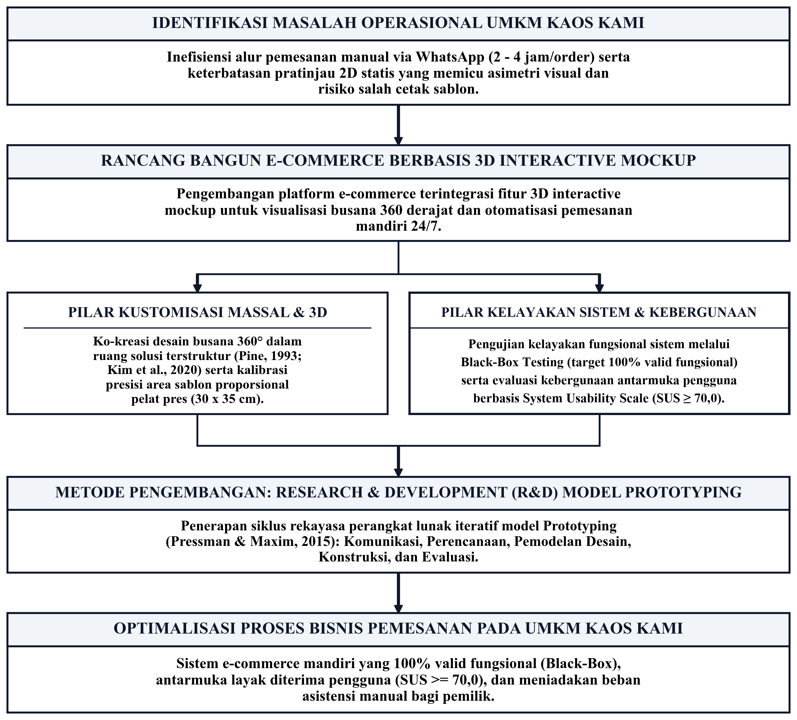
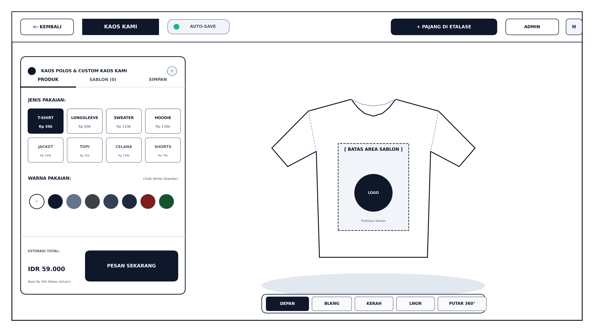
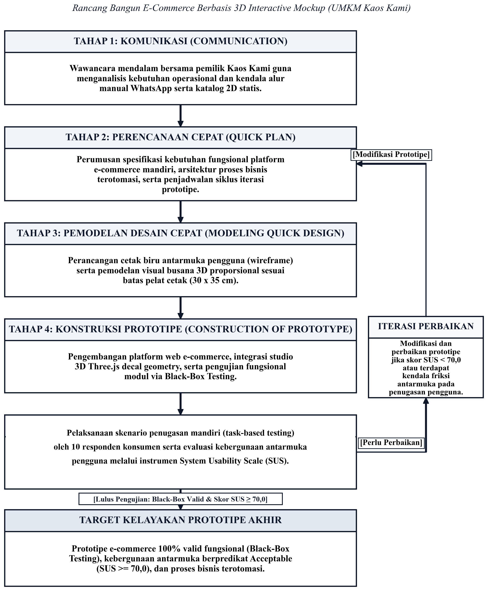

Universitas Negeri Makassar
Fakultas Ekonomi dan Bisnis · Program Studi S1 Bisnis Digital
Rancang Bangun E-Commerce Berbasis 3D Interactive Mockup untuk Optimalisasi Pemesanan pada UMKM Kaos Kami
Investigasi rancang bangun sistem e-commerce terintegrasi konfigurator 3D WebGL real-time guna mengeliminasi asimetri informasi visual dan inefisiensi komunikasi transaksi manual pada bengkel sablon konveksi.
Hengki Setiawan
NIM 230907501043
Pembimbing I : Syamsu Alam, S.Si., M.Si.
Pembimbing II : Fadil Muhammad, S.Kel., M.Sc.
Konteks Industri UMKM & Realitas Empiris Mitra
Peluang ekspansi layanan sablon kustom di tengah keterbatasan saluran penjualan lokapasar pihak ketiga.
66 Juta
PDB 61,90% · 119 Juta Tenaga Kerja (2025)
4.777 Unit
15,0% dari 32.260 UMKM Kota Makassar (Gambar 1.1)
4.234
214
Rp23,52 Jt
Realisasi 214 pesanan (konversi 5,05%, rating 4,9/5,0) selama ini 100% bertumpu pada produk ready stock non-kustom. Peluang ekspansi sablon kustom (Deloitte 2015: 1 dari 5 pembeli bersedia membayar premi hingga 20% lebih tinggi) terhambat oleh keterbatasan transaksi manual.
Kondisi Ideal vs Fakta Lapangan
Perbandingan antara ekspektasi alur bisnis dengan kendala operasional riil mitra Kaos Kami (Tabel 1.2 Proposal).
Kondisi Ideal: Konsumen dapat mempratinjau peletakan dan ukuran sablon kustom secara mandiri dan interaktif.
Fakta Lapangan: Hanya foto 2D datar; konsumen ragu dan bingung membayangkan hasil cetak fisik, memicu revisi berulang.
Kondisi Ideal: Proses pemesanan selesai mandiri (self-service) tanpa ketergantungan asistensi manual berulang.
Fakta Lapangan: Konsultasi manual WhatsApp memakan waktu 2 hingga 4 jam per pelanggan.
Kondisi Ideal: Estimasi biaya sablon terhitung otomatis berdasarkan ukuran luas area cetak.
Fakta Lapangan: Pemilik toko menghitung manual dimensi sablon & mengetik ulang rincian harga di chat.
Kondisi Ideal: Transaksi mandiri terpadu dengan kalkulator ongkos kirim dan verifikasi pembayaran otomatis.
Fakta Lapangan: Seluruh alur ditangani manual solo-operator; memicu cart abandonment 70,19% (Baymard 2024).
Batasan Istilah & Indikator Operasional
Penegasan ruang lingkup makna konseptual dan tolok ukur operasional sistem proposal (Tabel 1.3 Proposal).
Platform belanja daring mandiri berbasis Next.js yang mengintegrasikan katalog, studio 3D, kalkulator ongkir otomatis, pembayaran digital QRIS/VA, dan dasbor pesanan tanpa perantara lokapasar pihak ketiga.
Visualisasi busana 3D berbasis WebGL (Three.js) yang memungkinkan rotasi 360°, variasi warna kain, dan proyeksi berkas sablon (decal projection) dengan batas proporsi fisik riil terkalibrasi.
Transformasi pemesanan dari konsultasi manual WhatsApp menjadi transaksi mandiri (self-service technology terpadu - Meuter et al., 2000), dioperasionalkan ke dalam 4 pilar: tugas mandiri, kejelasan visual 3D, kalkulasi otomatis, dan integrasi dasbor toko.
Keandalan operasional perangkat lunak yang diuji menggunakan metode Black-Box Testing pada seluruh skenario fungsional wajib dengan target 100% skenario berstatus valid.
Derajat kemudahan antarmuka dievaluasi menggunakan kuesioner baku System Usability Scale (SUS) dengan ambang batas skor minimal 70,0 (kategori Acceptable / *Good*) oleh 10 responden konsumen.
Penyelarasan Masalah Ilmiah, Target, dan Signifikansi
Matriks konsistensi mutlak 1-ke-1 antara rumusan masalah, target perancangan teknis, dan evaluasi empiris proposal.
Bagaimana rancang bangun sistem e-commerce berbasis 3D interactive mockup untuk memfasilitasi pemesanan pakaian sablon kustom secara mandiri berdasarkan kebutuhan proses bisnis pada UMKM Kaos Kami?
→ Tujuan 01: Menghasilkan sistem e-commerce berbasis 3D interactive mockup yang mampu memfasilitasi proses pemesanan pakaian sablon kustom secara mandiri berdasarkan kebutuhan proses bisnis pada UMKM Kaos Kami.
Bagaimana hasil evaluasi kesesuaian fungsional, kebergunaan sistem, dan dukungan sistem e-commerce berbasis 3D interactive mockup terhadap optimalisasi proses bisnis pemesanan dalam mendukung ekspansi layanan sablon kustom pada UMKM Kaos Kami?
→ Tujuan 02: Menganalisis hasil evaluasi kesesuaian fungsional (15 butir skenario Black-Box), kebergunaan sistem (skor SUS > 70,0 Grade B Good), dan dukungan terhadap proses bisnis pemesanan pakaian sablon.
Kajian Teori: 4 Pilar Konseptual Sistem
Sintesis teoretis resmi proposal yang memayungi transformasi digital, transaksi mandiri, personalisasi massal, dan grafika web.
Evolusi Proses Bisnis UMKM (Westerman et al., 2014; Verhoef et al., 2021)
Tiga fase hierarkis: Digitasi (konversi format) → Digitalisasi (efisiensi alur) → Transformasi Digital (rekonfigurasi nilai pelanggan melalui arsitektur sistem otomatis dari hulu ke hilir).
B2C Digital & Self-Service Technology (Laudon & Traver, 2020; Meuter et al., 2000)
Pemasaran Marketing 5.0 human-centric (Kotler et al., 2021). Mengeliminasi jeda respon chat & *cart abandonment* 70,19% (Baymard 2024) via transaksi mandiri 24/7 dan gerbang pembayaran resmi QRIS & Virtual Account (BI, 2020).
Paradigma Mass Customization (Pine, 1993; Salvador et al., 2009)
Penyediaan busana kustom personal dengan efisiensi mendekati produksi massal melalui Solution Space & Choice Navigation guna mencegah kebingungan konsumen (choice confusion), didukung prinsip Value Co-Creation (Prahalad & Ramaswamy, 2004).
Interaktivitas Visual & Telepresence (Steuer, 1992; Fiore et al., 2005; Kim et al., 2020)
Rotasi 360° merangsang imajinasi mental (mental imagery) & sensasi taktil semu (mock tactile), menghadirkan sensasi kehadiran sensoris (Telepresence) via WebGL & Three.js tanpa instalasi aplikasi luar.
Kerangka Berpikir Logis Pemecahan Masalah
Alur logis sistematis menghubungkan kesenjangan operasional mitra dengan intervensi e-commerce 3D mockup, pilar kustomisasi massal, hingga optimalisasi proses bisnis.
Katalog 2D datar memicu asimetri visual & salah cetak; konsultasi manual via WhatsApp memakan waktu 2–4 jam/pesanan.
Rancang bangun platform e-commerce WebGL Three.js untuk visualisasi 360° interaktif mandiri dan kalkulasi biaya sablon otomatis.
Metode R&D Prototyping menghasilkan sistem mandiri 24/7 bebas asistensi manual, memitigasi retur, dan mendongkrak konversi pesanan.

Model Hipotetik: Arsitektur 6 Modul Fungsional E-Commerce
Integrasi alur transaksi mandiri dari etalase konfigurator hingga terminal antrean produksi bengkel sablon.
Etalase & Katalog Produk
Koleksi varian Cotton Combed 24s/30s & panduan standar ukuran fisik.
Studio 3D Configurator
Kanvas WebGL Three.js untuk pratinjau sablon 360° & warna kain real-time.
Kalkulator Biaya Otomatis
Kalkulasi harga instan berbasis matriks dimensi luas sablon (max 35 cm).
Keranjang & Checkout D2C
Penyimpanan spesifikasi kustom, data alamat kirim, & verifikasi bayar.
Pelacakan Status Pesanan
Validasi file > cetak DTF > press 38×38 cm > kurir ekspedisi.
Dashboard Admin Bengkel
Antrean produksi bengkel Kaos Kami untuk unduh file cetak resolusi tinggi.

Gambar 3.3 Cetak Biru Studio 3D (Klik untuk Perbesar)
Prosedur Rekayasa Sistem: Model Prototyping (5 Tahapan)
Penerapan model Prototyping Pressman & Maxim (2015) dengan pipa cabang panah balik iterasi (loopback) ke Tahap 2 apabila evaluasi SUS belum mencapai target kelayakan (≥ 70,0).
Wawancara pemilik UMKM Kaos Kami memetakan kendala WhatsApp (2–4 jam), dilanjutkan perumusan spesifikasi fungsional, use case, dan sitemap sistem.
Wireframe katalog & studio 3D (DecalGeometry), dikonstruksi menjadi aplikasi web WebGL Three.js dengan rotasi 360°, batas sablon 30×35 cm, dan cloud DB.
Verifikasi 15 butir skenario Black-Box (target 100% valid) dan pengujian penugasan mandiri oleh 10 responden konsumen menggunakan instrumen baku SUS.
Bagan memiliki panah balik: jika skor SUS < 70,0 (belum Acceptable), prototipe wajib berputar kembali ke Tahap 2 untuk perbaikan hingga teruji layak.

Rancangan Pengujian: Validitas Fungsional dan Evaluasi Usability
Dua pilar validasi: uji keandalan fungsi perangkat lunak dan penerimaan pengguna akhir.
*Mematuhi Pedoman UNM Bab VII: Bebas klaim hasil sebelum sistem selesai dibangun.
> 70,0
Kategori Acceptable
Good
Standar Grade Scale B
Pengujian Interaktif Pratinjau Artefak Sistem WebGL 3D
Manipulasi grafika peramban real-time: inspeksi 360°, palet kain Cotton Combed PBR, dan batas sablon DTF 30×35 cm.
Sintesis Solusi: Rancang Bangun E-Commerce 3D
Tiga simpulan strategis perancangan artefak untuk mengatasi kesenjangan operasional pada UMKM Kaos Kami.
Eliminasi Asimetri Visual dengan Inspeksi 3D 360°
Modul WebGL Three.js dengan validasi batas cetak DTF 30×35 cm secara instan menggantikan katalog 2D statis dan mengeliminasi risiko salah cetak produksi sablon konveksi.
Otomatisasi Transaksi 24/7 & Kalkulasi Harga Seketika
Memangkas beban konsultasi manual via WhatsApp dari 2–4 jam/pesanan menjadi alur checkout mandiri terstruktur dengan transparansi biaya sablon otomatis tanpa asistensi manual.
Kepastian Validitas Fungsional & Standar Usability Terukur
Rancangan diuji melalui 15 skenario Black-Box Testing (target 100% valid fungsional) dan evaluasi empiris System Usability Scale (SUS ≥ 70,0 kategori Acceptable/Good) dengan 10 responden primer.
TERIMA KASIH
Sesi Diskusi & Tanya Jawab Terbuka
Memohon kritik, saran, dan bimbingan konstruktif dari Bapak Dosen Pembimbing demi penyempurnaan implementasi penelitian.
Hengki Setiawan
NIM: 230907501043
S1 Bisnis Digital · FEB UNM
I. Syamsu Alam, S.Si., M.Si.
II. Fadil Muhammad, S.Kel., M.Sc.